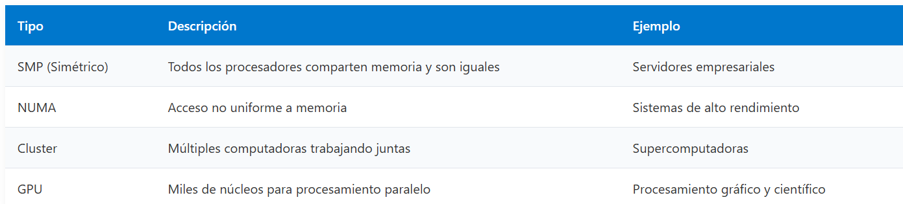
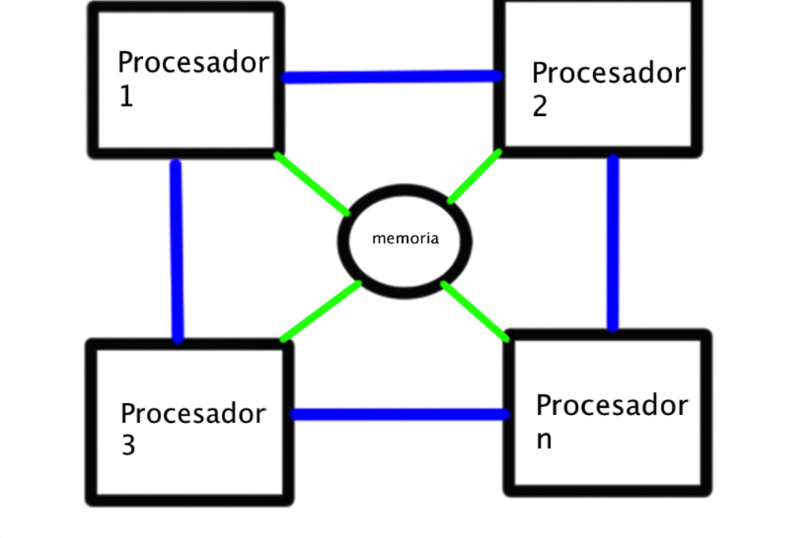
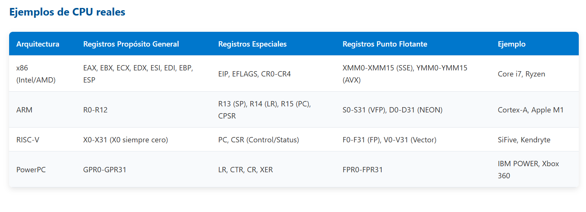
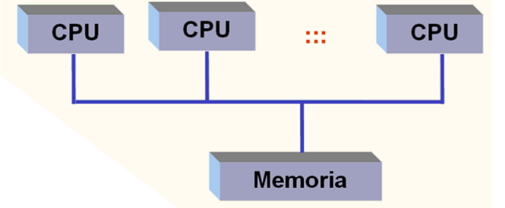

Bienvenido a mis Apuntes
Este sitio contiene materiales organizados por unidades de la materia Arquitectura en Computadoras. Aqui podras encontrar informacion fundamental sobre el diseño y organizacion de los sistemas computacionales, incluyendo temas como la estructura
Contenido del Semestre:
- Unidad 1: Introducción a la Arquitectura de Computadoras
- Unidad 2: Estructura y Funcionamiento del procesador
- Unidad 3: Procesadores
- Unidad 4: Multiprocesadores
- Unidad 5: Practicas
Unidad 1: Introducción a la Arquitectura de Computadoras
1.1 Modelos de arquitectura en computadoras:
-Es el diseño conceptual y la estructura operacional fundamental de un sistema de computadora. -Es un modelo y una descripción funcional de los requerimientos y las implementaciones de diseño para varias partes de una computadora. Se enfoca especialmente en cómo la Unidad Central de Procesamiento (UCP) trabaja internamente y accede a las direcciones de memoria. Define la forma de seleccionar e interconectar componentes de hardware para crear computadoras según requerimientos de funcionalidad, rendimiento y costo.
1.12 Arquitecturas clásicas
- Las arquitecturas clásicas se basan en el modelo de Von Neumann, que consta de:
- Una unidad central de procesamiento (CPU)
- Memoria principal
- buses de comunicacion
1.2 Arquitecturas Segmentadas
Las arquitecturas segmentadas dividen la memoria en segmentos para mejorar la gestión y seguridad de los programas.
(pipeline de 5 etapas)(Ventajas)
(Desventajas)
1.3 Arquitecturas de Multiprocesamiento
Estas arquitecturas utilizan multiples procesadores para ejecutar tareas en paralelo:


Unidad 2: Estructura y funcionamiento
2.1 Registros visibles para el usuario
Los registros visibles para el usuario son aquellos que pueden ser utilizados directamente mediante instrucciones del lenguaje máquina. Estos registros permiten almacenar datos temporales, resultados intermedios y direcciones necesarias para la ejecución de programas.
Tipos de registros visibles
- Registros de uso general: Se utilizan para guardar datos temporales o resultados de operaciones realizadas por el procesador. Son fundamentales para ejecutar cálculos rápidos dentro de la CPU.
- Registros de datos: Almacenan valores específicos que serán utilizados durante operaciones aritméticas o lógicas.
- Registros de direcciones: Guardan direcciones de memoria que permiten localizar datos o instrucciones dentro de la memoria principal.
- Registros de códigos de condición: También conocidos como flags, indican el resultado de las operaciones ejecutadas por la ALU, por ejemplo:
- Si el resultado fue cero.
- Si el resultado fue negativo.
- Si ocurrió un desbordamiento.
2.2.2 Registros de control y de estados
Los registros de control son estructuras internas de la CPU utilizadas para coordinar y supervisar el funcionamiento del procesador. No son visibles para el usuario común y generalmente son utilizados por el sistema operativo y programas privilegiados.
Registros de control principales
- Contador de Programa (PC): Contiene la dirección de la siguiente instrucción que será ejecutada por el procesador.
- Registro de Instrucción (IR): Guarda temporalmente la instrucción actual que está siendo procesada.
- Registro de Dirección de Memoria (MAR): Almacena la dirección de memoria donde se realizará una lectura o escritura.
- Registro Intermedio de Memoria (MBR/MDR): Guarda los datos que fueron leídos de memoria o los que serán enviados hacia ella.
Registros de estado
Los registros de estado almacenan información relacionada con el resultado de las operaciones ejecutadas por la CPU. Utilizan bits llamados flags para indicar diferentes condiciones del sistema.
Ejemplos de flags
- S (Signo): Indica si el resultado es positivo o negativo.
- Z (Zero): Señala si el resultado de una operación fue cero.
- AC (Auxiliary Carry): Detecta acarreo en operaciones internas.
- P (Parity): Indica si el número de bits en 1 es par o impar.
- CY (Carry): Señala si hubo acarreo en operaciones aritméticas.
2.2.3 Ejemplos de organización de registros de CPU reales
Las CPU modernas utilizan diferentes tipos de registros para optimizar el rendimiento y acelerar la ejecución de instrucciones. Estos registros trabajan junto con la Unidad de Control y la ALU para coordinar el procesamiento de datos.
Ejemplo en procesadores modernos
Procesadores desarrollados por empresas como Intel y AMD integran:
- Registros de propósito general.
- Registros de control.
- Registros de estado.
- Memoria caché.
- Unidades de ejecución paralela.
Gracias a esta organización, los procesadores pueden ejecutar múltiples tareas simultáneamente y mejorar el rendimiento del sistema.
Ejemplo de registros usados en la CPU
- AX y BX: Son registros utilizados para almacenar datos temporales durante operaciones matemáticas y lógicas.
- PC (Program Counter): Indica la ubicación de la siguiente instrucción a ejecutar.
- IR (Instruction Register): Mantiene almacenada la instrucción actual mientras se procesa.
- Acumulador: Registro especializado que almacena resultados intermedios de operaciones realizadas por la ALU.
Importancia de la organización de registros
La correcta organización de registros permite:
- Mayor velocidad de procesamiento.
- Reducción de accesos a memoria.
- Mejor coordinación entre componentes internos.
- Ejecución eficiente de instrucciones y programas.

Unidad 3: Procesadores
1.0 Chipset
El chipset es un conjunto de circuitos integrados ubicado en la tarjeta madre que se encarga de coordinar la comunicación entre los diferentes componentes de la computadora, como el procesador, la memoria RAM, los dispositivos de almacenamiento y los periféricos.
Funciones principales del chipset
- Controlar el flujo de datos entre la CPU y los demás componentes.
- Administrar la comunicación con dispositivos de entrada y salida.
- Coordinar el acceso a la memoria y almacenamiento.
- Mejorar el rendimiento general del sistema.
Tipos de chipset
- Northbridge: Se encargaba de la comunicación de alta velocidad entre:
- Procesador
- Memoria RAM
- Tarjeta gráfica
- Southbridge: Controlaba dispositivos de menor velocidad como:
- Puertos USB
- Disco duro
- Audio
- Red
2. Aplicaciones
Las aplicaciones de hardware y arquitectura de computadoras permiten el funcionamiento correcto de sistemas informáticos en diferentes áreas tecnológicas.
Importancia de las aplicaciones
- Facilitan el procesamiento de información.
- Permiten la comunicación entre dispositivos.
- Mejoran la automatización de procesos.
- Incrementan la eficiencia en empresas e industrias.
2.1 Entrada y salida
Los dispositivos de entrada y salida permiten la interacción entre el usuario y la computadora.
Dispositivos de entrada
Son aquellos que envían información hacia la computadora.
- Teclado
- Mouse
- Escáner
- Micrófono
- Cámara web
Dispositivos de salida
Son los que muestran o reproducen la información procesada por la computadora.
- Monitor
- Impresora
- Bocinas
- Proyector
Dispositivos mixtos
Algunos dispositivos pueden funcionar como entrada y salida.
- Pantallas táctiles
- Memorias USB
- Discos duros externos
2.2 Almacenamiento
El almacenamiento permite guardar información de manera temporal o permanente dentro de un sistema de cómputo.
Tipos de almacenamiento
- Almacenamiento primario: Es la memoria utilizada directamente por el procesador.
- Memoria RAM
- Memoria caché
- Almacenamiento secundario: Guarda datos de forma permanente.
- Disco duro (HDD)
- Unidad de estado sólido (SSD)
- Memorias USB
- Tarjetas SD
Importancia del almacenamiento
- Conserva archivos y programas.
- Permite recuperar información rápidamente.
- Facilita la ejecución de aplicaciones.
2.3 Fuentes de alimentación
La fuente de alimentación es el componente encargado de suministrar energía eléctrica a todos los dispositivos internos de la computadora.
Funciones principales
- Convertir corriente alterna (CA) en corriente directa (CD).
- Distribuir energía a la tarjeta madre, discos y periféricos.
- Proteger los componentes contra variaciones eléctricas.
Tipos de fuentes de alimentación
- ATX: Es la más utilizada en computadoras modernas.
- Fuentes modulares: Permiten conectar únicamente los cables necesarios, mejorando la organización interna.
- Fuentes certificadas: Incluyen certificaciones como 80 PLUS, que garantizan eficiencia energética.
Importancia
Una fuente de alimentación adecuada mejora:
- La estabilidad del sistema.
- El rendimiento del equipo.
- La vida útil de los componentes.
3. Ambientes de servicio
Los ambientes de servicio son los diferentes entornos donde se utilizan los sistemas de cómputo y tecnologías informáticas para realizar tareas específicas.
Características
- Automatización de procesos.
- Manejo de grandes cantidades de información.
- Comunicación rápida y eficiente.
- Optimización de recursos.
3.1 Industria
En la industria, las computadoras y sistemas digitales se utilizan para controlar procesos de producción y automatización.
Aplicaciones en la industria
- Control de maquinaria.
- Robots industriales.
- Sistemas de monitoreo.
- Diseño asistido por computadora (CAD).
- Manufactura automatizada.
Beneficios
- Mayor precisión.
- Reducción de errores.
- Incremento de productividad.
- Menor tiempo de producción.
3.2 Comercio electrónico
El comercio electrónico consiste en la compra y venta de productos o servicios a través de internet.
Características principales
- Disponibilidad las 24 horas.
- Pagos electrónicos.
- Acceso desde cualquier lugar.
- Comunicación inmediata con clientes.
Ejemplos de comercio electrónico
- Tiendas en línea.
- Plataformas de pago digital.
- Aplicaciones móviles de compras.
- Servicios de entrega a domicilio.
Beneficios
- Mayor alcance de clientes.
- Reducción de costos operativos.
- Rapidez en transacciones.
- Facilidad para promocionar productos.
Unidad 4: Multiprocesadores
4.3 Sistemas de Memoria Compartida: Multiprocesadores
Los sistemas de memoria compartida, también conocidos como multiprocesadores, son computadoras paralelas formadas por varios procesadores conectados entre sí y compartiendo un mismo sistema de memoria. Este tipo de arquitectura permite que varios procesadores trabajen simultáneamente sobre diferentes tareas, mejorando el rendimiento general del sistema.
¿Qué es un multiprocesador?
Un multiprocesador es una arquitectura MIMD (Multiple Instruction Multiple Data) donde varios procesadores pueden ejecutar diferentes instrucciones utilizando un espacio de memoria compartido. Todos los procesadores tienen acceso a las mismas direcciones de memoria y pueden comunicarse mediante intercambio de mensajes.
Características principales
- Uso de varios procesadores trabajando en paralelo.
- Memoria compartida entre todos los procesadores.
- Ejecución simultánea de múltiples tareas.
- Mayor velocidad de procesamiento.
- Mejor aprovechamiento de recursos computacionales.
Multiproceso y multitarea
El multiproceso consiste en ejecutar varios procesos al mismo tiempo utilizando múltiples CPUs. La multitarea permite que varios procesos compartan una misma CPU mediante cambios rápidos entre tareas.
4.3.1 Redes de Interconexión Dinámicas o Indirectas
Las redes de interconexión permiten la comunicación entre procesadores y memoria dentro de sistemas paralelos. Estas redes pueden clasificarse en estáticas y dinámicas.
Redes estáticas
Las redes estáticas tienen una topología fija definida desde la construcción del sistema. Las conexiones no cambian durante el funcionamiento del equipo.
- Conexiones permanentes.
- Topología predefinida.
- Difíciles de modificar.
- Adecuadas para tráfico predecible.
Redes dinámicas
Las redes dinámicas permiten modificar la topología durante la ejecución de programas. Utilizan dispositivos llamados switches o conmutadores para dirigir la información.
- Mayor flexibilidad.
- Mejor comunicación entre procesadores y memoria.
- Mayor eficiencia en sistemas multiprocesadores.
Importancia
En sistemas multiprocesadores, todos los accesos a memoria deben pasar por la red de interconexión, por lo que esta debe ser rápida y eficiente para evitar retrasos.
Medio Compartido
En redes de computadoras, el medio compartido permite que varios dispositivos utilicen el mismo canal de comunicación para transmitir información.
Ejemplo: ADSL
La tecnología ADSL utiliza una misma línea telefónica para transmitir:
- Voz de llamadas telefónicas.
- Datos de Internet de subida.
- Datos de Internet de baixada.
Cada tipo de información utiliza diferentes frecuencias para evitar interferencias.
Ventajas del medio compartido
- Reduce costos de infraestructura.
- Permite compartir recursos de comunicación.
- Facilita la conexión de múltiples dispositivos.
Redes Conmutadas
Las redes conmutadas utilizan dispositivos llamados switches o conmutadores para dirigir paquetes de datos hacia su destino correcto dentro de una red.
Funcionamiento
Los switches analizan la dirección de destino de los datos y seleccionan la mejor ruta para enviarlos.
Tipos de conmutación
- Conmutación de paquetes: La información se divide en pequeños paquetes que pueden viajar por diferentes rutas hasta llegar al destino.
- Conmutación de circuitos: Se establece una conexión física dedicada entre dos puntos durante toda la comunicación.
Beneficios
- Mayor eficiencia en la transmisión de datos.
- Reducción de pérdida de información.
- Mejor administración del tráfico de red.
- Compartición de recursos en redes locales.
Ejemplos
- Redes Ethernet.
- Red Telefónica Conmutada (RTC).
Sistemas de Memoria Distribuida
Los sistemas de memoria distribuida están formados por múltiples computadoras independientes conectadas mediante redes de alta velocidad. También son conocidos como clústeres o multicomputadores.
Características principales
- Memoria privada: Cada computadora tiene su propia memoria y no puede acceder directamente a la memoria de otros nodos.
- Comunicación mediante mensajes: El intercambio de datos entre nodos se realiza mediante protocolos de red.
- Escalabilidad: Es posible aumentar la capacidad del sistema agregando más nodos.
- Alto rendimiento: Permiten realizar procesamiento paralelo de grandes cantidades de información.
Ventajas
- Menor costo comparado con supercomputadoras.
- Mayor capacidad de expansión.
- Alta disponibilidad y rendimiento.
Redes de Interconexión Estáticas
Las redes de interconexión estáticas son sistemas donde las conexiones entre nodos permanecen fijas durante toda la operación del sistema. También se conocen como redes directas.
Características
- Enlaces permanentes.
- Comunicación directa entre nodos.
- Baja escalabilidad.
- Eficientes para tráfico constante y predecible.
Aplicaciones
- Sistemas multiprocesador.
- Redes paralelas.
- Arquitecturas de alto rendimiento.

Prácticas del semestre
Estas son todas las practicas que tuvimos durante el semestre:
Durante todas las practicas que tuvimos, aprendimos sobre los conceptos fundamentales de la arquitectura de las computadoras, armamos y desarmamos computadoras, observamos cada pieza y su funcion.
📚 Prácticas del Semestre 📚
Descarga las prácticas realizadas durante el semestre: